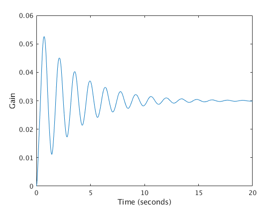
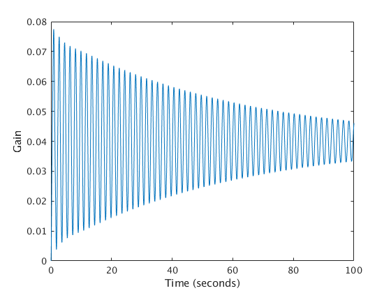
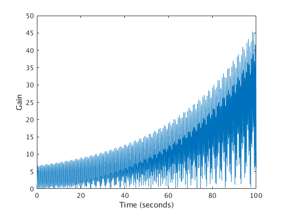

Contents
Control Systems HW6 Problem 1
K1 = 100; M1 = 1; B1 = 2;
A1 = [0, 0, 0, 1, 0, 0;...
0, 0, 0, 0, 1, 0;...
0, 0, 0, 0, 0, 1;...
-2*K1/M1, K1/M1, 0, -2*B1/M1, 0, B1/M1;...
K1/M1, -2*K1/M1, K1/M1, 0, 0, 0;...
0, K1/M1, -K1/M1, B1/M1, 0, -B1/M1;];
B1 = [0; 0; 0; 0; 0; 1/M1];
C1 = [0, 0, 1, 0, 0, 0];
D1 = [0];
G1 = ss(A1,B1,C1,D1);
tf(G1)
zpk(G1)
t1 = 0:0.01:20;
y1 = step(G1,t1);
plot(t1, y1);
xlabel('Time (seconds)');
ylabel('Gain');
ans =
s^4 + 4 s^3 + 400 s^2 + 800 s + 30000
------------------------------------------------------------
s^6 + 6 s^5 + 504 s^4 + 2000 s^3 + 60800 s^2 + 6e04 s + 1e06
Continuous-time transfer function.
ans =
(s^2 + 2.042s + 102.1) (s^2 + 1.958s + 293.9)
--------------------------------------------------------------------
(s^2 + 0.5498s + 19.86) (s^2 + 4.714s + 157) (s^2 + 0.7358s + 320.7)
Continuous-time zero/pole/gain model.

Control Systems HW6 Problem 2
K2 = 100; M2 = 1; B2 = 2;
A2 = [0, 0, 0, 0, 1, 0, 0, 0; ...
0, 0, 0, 0, 0, 1, 0, 0; ...
0, 0, 0, 0, 0, 0, 1, 0; ...
0, 0, 0, 0, 0, 0, 0, 1; ...
-2*K2/M2, K2/M2, 0, 0, -2*B2/M2, B2/M2, 0, 0; ...
K2/M2, -2*K2/M2, K2/M2, 0, B2/M2, -2*B2/M2, B2/M2, 0; ...
0, K2/M2, -2*K2/M2, K2/M2, 0, B2/M2, -2*B2/M2, B2/M2; ...
0, 0, K2/M2, -K2/M2, 0, 0, -B2/M2, B2/M2]
B2 = [0; 0; 0; 0; 0; 0; 0; 1/M2];
C2 = [0, 0, 0, 1, 0, 0, 0, 0];
D2 = [0];
G2 = ss(A2,B2,C2,D2);
tf(G2)
zpk(G2)
t2 = 0:0.01:100;
y2 = step(G2,t2);
figure;
plot(t2, abs(y2));
xlabel('Time (seconds)');
ylabel('Gain');
A2 =
0 0 0 0 1 0 0 0
0 0 0 0 0 1 0 0
0 0 0 0 0 0 1 0
0 0 0 0 0 0 0 1
-200 100 0 0 -4 2 0 0
100 -200 100 0 2 -4 2 0
0 100 -200 100 0 2 -4 2
0 0 100 -100 0 0 -2 2
ans =
s^6 + 12 s^5 + 640 s^4 + 4032 s^3 + 1.048e05 s^2 + 2.4e05 s + 4e06
------------------------------------------------------------------------
s^8 + 10 s^7 + 720 s^6 + 3984 s^5 + 1.524e05 s^4 + 3.584e05 s^3
+ 1e07 s^2 + 4e06 s + 1e08
Continuous-time transfer function.
ans =
(s^2 + 1.172s + 58.58) (s^2 + 4s + 200) (s^2 + 6.828s + 341.4)
------------------------------------------------------------------------
(s^2 + 0.03365s + 12.12) (s^2 + 0.641s + 101.8) (s^2 + 2.915s + 232.2)
(s^2 + 6.41s + 348.8)
Continuous-time zero/pole/gain model.

Control Systems HW6 Problem 3
K3 = 5; J3 = 2;
A3 = [0, 0, 0, 1, 0, 0; ...
0, 0, 0, 0, 1, 0; ...
0, 0, 0, 0, 0, 1; ...
-5^4*K3/(J3*5^4), 5^4*K3/(J3*5^4), 0, 0, 0, 0; ...
(5^4*K3) /(J3*5^2), -(K3*5^4 + 5^2*K3)/(J3*5^2), K3*5^2/(J3*5^2), 0, 0, 0; ...
0, 5^2*K3/(J3), -(5^2*K3 + K3)/(J3), 0, 0, 0];
B3 = [0; 0; 0; 1/(5^4*J3); 0; 0];
C3 = [0, 0, 1, 0, 0, 0];
D3 = [0];
G3 = ss(A3,B3,C3,D3);
tf(G3)
zpk(G3)
ans =
3.125
------------------------------------------------------------------------
s^6 + 5.128e-17 s^5 + 132.5 s^4 + 9.55e-15 s^3 + 4238 s^2 + 3.659e-13 s
+ 15.62
Continuous-time transfer function.
ans =
3.125
--------------------------------------------
(s^2 + 0.003688) (s^2 + 53.93) (s^2 + 78.57)
Continuous-time zero/pole/gain model.
Control Systems HW6 Problem 4
G4 = tf([132666],[1 393.646 79.8463 39401.9])
t4 = 0:0.1:100;
y4 = step(G4,t4);
figure;
plot(t4, abs(y4));
xlabel('Time (seconds)');
ylabel('Gain');
G4 =
132666
-----------------------------------
s^3 + 393.6 s^2 + 79.85 s + 3.94e04
Continuous-time transfer function.
